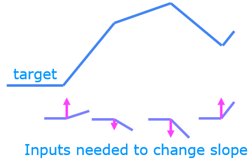

Optional Lab - ReLU activation
[1]:
import numpy as np
import matplotlib.pyplot as plt
from matplotlib.gridspec import GridSpec
plt.style.use('./deeplearning.mplstyle')
import tensorflow as tf
from tensorflow.keras.models import Sequential
from tensorflow.keras.layers import Dense, LeakyReLU
from tensorflow.keras.activations import linear, relu, sigmoid
%matplotlib widget
from matplotlib.widgets import Slider
from lab_utils_common import dlc
from autils import plt_act_trio
from lab_utils_relu import *
import warnings
warnings.simplefilter(action='ignore', category=UserWarning)
## 2 - ReLU Activation This week, a new activation was introduced, the Rectified Linear Unit (ReLU).
[2]:
plt_act_trio()
Why Non-Linear Activations?
 The function shown is composed of linear pieces (piecewise linear). The slope is consistent during the linear portion and then changes abruptly at transition points. At transition points, a new linear function is added which, when added to the existing function, will produce the new slope. The new function is added at transition point but does not contribute to the output prior to that point. The non-linear activation function is responsible for disabling the input prior to and sometimes after the transition points. The following exercise provides a more tangible example.
Using the sliders below, modify weights and bias to match the target. Hints: Start with w1 and b1 and leave w2 and b2 zero until you match the 2nd segment. Clicking rather than sliding is quicker. If you have trouble, don’t worry, the text below will describe this in more detail.
[3]:
_ = plt_relu_ex()
Unit 1 is responsible for the 2nd segment. Here the ReLU kept this unit quiet until after x is 1. Since the first unit is not contributing, the slope for unit 1, \(w^{[1]}_1\), is just the slope of the target line. The bias must be adjusted to keep the output negative until x has reached 1. Note how the contribution of Unit 1 extends to the 3rd segment as well.
Unit 2 is responsible for the 3rd segment. The ReLU again zeros the output until x reaches the right value.The slope of the unit, \(w^{[1]}_2\), must be set so that the sum of unit 1 and 2 have the desired slope. The bias is again adjusted to keep the output negative until x has reached 2.
The “off” or disable feature of the ReLU activation enables models to stitch together linear segments to model complex non-linear functions.
Congratulations!
You are now more familiar with the ReLU and the importance of its non-linear behavior.
[ ]: